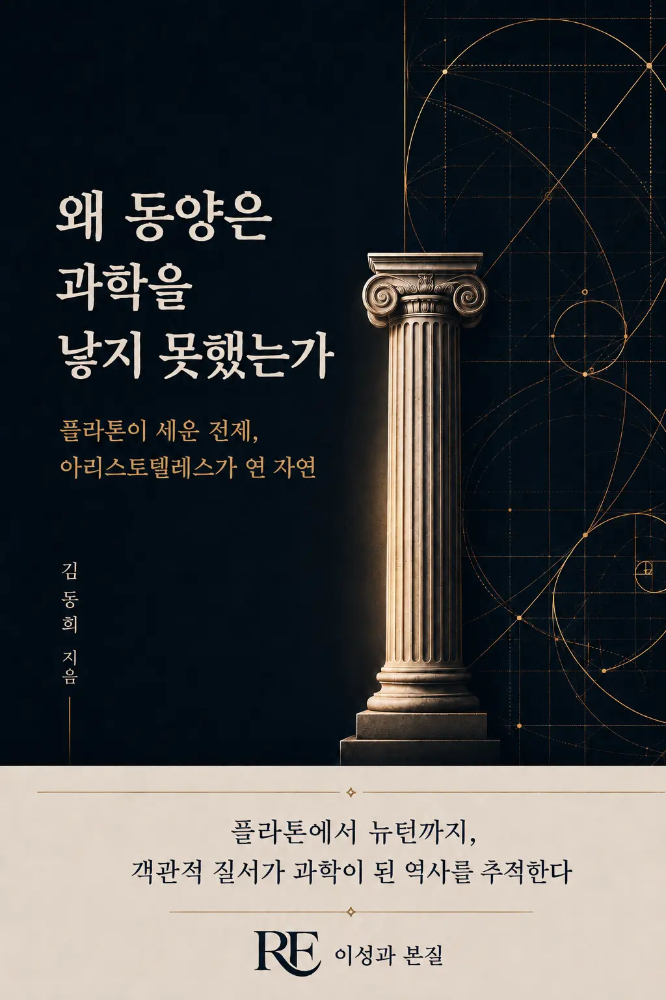

동양에 논리와 수학과 자연지식이 있었는데도 근대과학은 왜 서구에서 조립되었는가. 플라톤의 이데아와 아리스토텔레스의 형상에서 뉴턴까지, 객관적 질서가 과학이 된 역사를 추적한다.
이 책은 동양 문명의 결핍이나 열등함을 판정하지 않습니다. 중국·인도·그리스에 흩어져 있던 논리, 수학, 관찰, 기술과 제도를 나란히 놓고, 근대과학이라는 특수한 지식 체계가 성립하기 위해 어떤 조건들이 한자리에 모여야 했는지를 살핍니다.
과학의 탄생을 단순한 발명 연대기가 아니라 철학·문명·제도의 결합으로 이해하고 싶은 독자, 니덤의 질문과 동서 비교에 관심 있는 교양 독자.